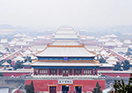
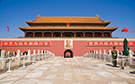
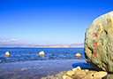

| 景点 | 位置 | 介绍 |
| 故宫  |
北京中轴线的中心 | 北京故宫是中国明清两代的皇家宫殿，旧称紫禁城。北京故宫以三大殿为中心，占地面积约72万平方米，建筑面积约15万平方米，有大小宫殿七十多座，房屋九千余间。
北京故宫于明成祖永乐四年（1406年）开始建设，以南京故宫为蓝本营建，到永乐十八年（1420年）建成，成为明清两朝二十四位皇帝的皇宫。民国十四年国庆节（1925年10月10日）故宫博物院正式成立开幕。北京故宫南北长961米，东西宽753米，四面围有高10米的城墙，城外有宽52米的护城河。紫禁城有四座城门，南面为午门，北面为神武门，东面为东华门，西面为西华门。城墙的四角，各有一座风姿绰约的角楼，民间有九梁十八柱七十二条脊之说，形容其结构的复杂。 北京故宫是世界上现存规模最大、保存最为完整的木质结构古建筑之一，是国家AAAAA级旅游景区，1961年被列为第一批全国重点文物保护单位；1987年被列为世界文化遗产 |
| 天安门广场  |
北京市的中心、故宫的南端 | 占地面积4800平方米，以杰出的建筑艺术和特殊的政治地位为世人所瞩目。
天安门是明清两代北京皇城的正门，始建于明朝永乐十五年（1417年），最初名“承天门”，寓“承天启运、受命于天”之意。设计者为明代御用建筑匠师蒯祥。清朝顺治八年（1651年）更名为天安门。 民国十四年（1925年）十月十日，故宫博物院成立，天安门开始对民众开放。1949年10月1日，在这里举行了中华人民共和国开国大典，由此被设计入国徽，并成为中华人民共和国的象征。1961年，中华人民共和国国务院公布为第一批全国重点文物保护单位之一。 |
| 洱海  |
云南大理郊区 | 为云南省第二大淡水湖。洱海北起洱源，长约42.58公里，东西最大宽度9.0公里，湖面面积256.5平方公里，平均湖深10米，最大湖深达20米。
洱海有两个出水口：1.在下关镇附近，经西洱河流出；2.“引洱入宾” 洱海是大理“风花雪月”四景之一“洱海月”之所在。据说因形状像一个耳朵而取名为“洱海”。 洱海水质优良，水产资源丰富，同时也是一个有着迤逦风光的风景区。洱海，虽然称之为海，但其实是一个湖泊，据说是因为云南深居内陆，白族人民为表示对海的向往，所以称之为洱海。 |